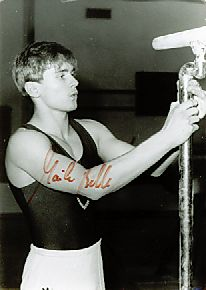

Maik Belle (GDR/GER)
1987 European PB Bronze Medalist

Medal Total
World Championships: 1
Bronze
European Championships: 1 Bronze
Competition Results
1984
GDR City Meet: 6th AA
GDR Youth Championships: 1st AA, 1st PB
Jr. Friendship Tournament (Druzhba): 26th AA
1985
Jr. Friendship Tournament (Druzhba): 1st PB
Jr. GDR-USSR Dual Meet: 2nd Team, 4th AA
1986
DTV Cup: 2nd AA
GDR-SUI Dual Meet: 1st Team, 2nd AA
1987
DTB Cup: 4th AA, 1st PH, 1st PB, 5th V
European Championships: 12th AA, 3rd PB
Gander Memorial: 2nd AA
GDR Championships: 1st PH
GDR-SUI Dual Meet: 1st Team, 5th AA
World Championships: 3rd Team, 29th AA (prelims), 8th PH
1988
Chunichi Cup: 4th AA, 1st PH, 2nd FX, 3rd PH
DTB Cup: 6th AA, 1st PB, 2nd PH, 4th HB
GDR Championships: 5th AA, 1st PB, 4th PH, 4th HB, 6th FX
Golden Sands International: 5th AA
Tokyo Cup: 3rd PH
1989
GDR-SUI Dual Meet: 1st Team, 2nd AA
Rome Grand Prix: 4th AA
World Sports Fair: 8th AA
1990
GDR-SUI-HUN Tri-Meet: 2nd AA
1991
Cottbus International: 2nd AA, 1st PB
Rome Grand Prix: 12th AA
1992
World Championships: 8th PH
This page was created on June 25,
2005.
©Gymn Forum